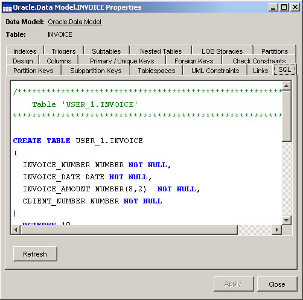
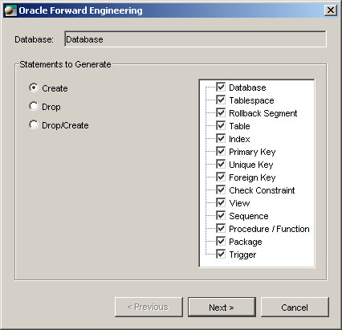

Forward
engineering
Forward engineering is the process of generating Data Definition
Language
(DDL) to create database schema objects. Open ModelSphere
offers two ways to generate DDL:
- Per object feature: SQL preview and generate DDL.
- Global feature: forward engineering.
Per
object feature
Every model’s object that can have an SQL equivalent will display, in
its properties
window, an SQL tab containing a preview of the DDL clause. It is also
possible to
create, from the same object, the DDL script file. This is available in
the object's pop-up
menu under Generate > DDL Statements.

Note that one file is generated per selected
object and that the file name is like [object’s name].sql.
Before you perform a forward engineering, do not forget to validate
your model. See Validation.
Consider setting the DDL generation directory option. See Modifying the options.
Global
feature
A global forward engineering function is also available. It will
generate a DDL for all models linked to the same database. Select a
model, and from the main menu, choose Tools > Database
> Forward
engineering...
The forward engineering uses objects from:
 Database: the
database itself and its physical concepts.
Database: the
database itself and its physical concepts.
 Data model: the
deployed data model.
Data model: the
deployed data model.
 Operation
library: the deployed operation library.
Operation
library: the deployed operation library.
 Domain model:
the deployed domain model’s objects are not forwarded explicitly.
However, any objects from the deployed data model and the operation
library that refer to a domain will be used in the process no matter
where
the domain is located. (i.e. every table column has a type which is
generated
in the DDL).
Domain model:
the deployed domain model’s objects are not forwarded explicitly.
However, any objects from the deployed data model and the operation
library that refer to a domain will be used in the process no matter
where
the domain is located. (i.e. every table column has a type which is
generated
in the DDL).
Statements
to generate

You will find , on the right side of this window, the list of concepts
that you can forward
engineer. The list of concepts is specific to the interface.
- Create: generates SQL statements to create the selected
concepts (create
table employee...)
- Drop: generates SQL statements to drop the selected
concepts (drop table
employee...)
- Drop/create: generates first the drop statements and then
the creation statements
(drop table employee... create table employee...)
Note: Consider setting the DDL generation directory option.
General
Scope
Each concept is available for a chosen user. It's possible to choose
their objects to be generated.

Set
Generation Variables
The variables of generation will allow you to adjust options, which
are, for the majority, specific to the DBMS interface.
For
an element to be generated, it must be selected in the Forward
Engineering
window.
MySQL uses a special syntax for
foreign keys. In order to activate this syntax, the option Enable MySQL foreign key constraints
must be checked.
The DDL statements are produced by a template file (.tpl). This is a
text file that can be modified by any user
who is familiar with the template language. See Templates.
See also: Running SQL Statements.